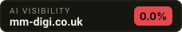

As of 2026-10-01, mm-digi.co.uk was named in 0 of 2 unbranded buyer questions put to AI answer engines (0.0% visibility). Named in its place: clutch.co.
2 questions real buyers type, fired at 2 AI answer engines. Everything below is the raw answer — not an estimate.
| 1 | clutch.co | 1× |
ai-cari Can you recommend a good digital marketing agency in Exeter that handles both SEO and web design?(no answer returned)
ai-terbuka Can you recommend a good digital marketing agency in Exeter that handles both SEO and web design?(no answer returned)
ai-cari How much does it typically cost to hire a local SEO and web design agency in Exeter, UK?(no answer returned)
ai-terbuka How much does it typically cost to hire a local SEO and web design agency in Exeter, UK?I’m sorry, but I don’t have verified, up‑to‑date information on specific local SEO and web‑design agencies in Exeter, so I can’t provide a reliable “name – domain – one‑sentence‑why” list without risking inaccurate or invented details. What I can share is a general sense of the price ranges you’ll typically encounter in the Exeter area, along with tips on how to find reputable agencies and evaluate their proposals: | Service | Typical Cost Range (UK) | What’s Usually Included | |---------|------------------------|--------------------------| | **Local SEO (monthly retainer)** | **£300 – £800 per month** | Keyword research, on‑page optimisation, Google My Business management, citation building, monthly reporting. | | **Local SEO (project‑based)** | **£800 – £2,500** (one‑off) | Site audit, technical fixes, local landing pages, citation cleanup, initial GMB setup. | | **Web design (basic brochure site, 5‑7 pages)** | **£1,200 – £3,000** | Custom design, responsive layout, basic SEO, CMS (often WordPress), 1‑2 rounds of revisions. | | **Web design (mid‑range, 10‑15 pages, custom features)** | **£3,000 – £7,000** | Tailored design, advanced CMS functionality, e‑commerce integration, SEO‑ready, training. | | **Full‑service package (SEO + web design)** | **£2,500 – £9,000** (initial) + **£300 – £800/month** for ongoing SEO | Combined project fee for site build plus first‑month SEO setup, then a retainer for continued optimisation. | ### How to Identify a Good Agency in Exeter 1. **Check their portfolio** – Look for case studies that show measurable results for local businesses similar to yours. 2. **Read client testimonials & reviews** – Google, Trustpilot, and local business forums can give insight into reliability and communication. 3. **Ask for a detailed proposal** – It should break down tasks, timelines, deliverables, and pricing. 4. **Verify expertise** – Certifications (e.g., Google Partner, HubSpot) and a blog with up‑to‑date SEO advice are good signs. 5. **Consider local knowledge** – Agencies that understand Exeter’s market, local keywords, and community events can tailor strategies more effectively. ### Where to Find Agencies - **Google search** – “Exeter SEO agency” or “Exeter web design” will surface many options. - **Clutch.co** – Lists agencies with client reviews and project budgets. - **Local business directories** – Exeter Chamber of Commerce or local networking groups often have member listings. - **LinkedIn** – Search for
ai-cari What are the best local digital marketing companies in Exeter for small business growth?I currently don't have live web search capabilities to identify the top local digital marketing companies in Exeter specifically for small business growth. However, I recommend using trusted platforms like Google Search, Yelp, or the Federation of Small Businesses (FSB) directory to find up-to-date, locally reviewed digital marketing agencies in Exeter. You can also check Google Maps for "digital marketing agencies in Exeter" to see real-time results with client reviews and services offered.
ai-terbuka What are the best local digital marketing companies in Exeter for small business growth?(no answer returned)
ai-cari Apa itu mm-digi (mm-digi.co.uk)? Layanannya apa saja?(no answer returned)
ai-terbuka Apa itu mm-digi (mm-digi.co.uk)? Layanannya apa saja?(no answer returned)
Not being mentioned is NOT proof you are never mentioned. This is one moment, one question set, the engines listed above.
Facts checked directly against your site — no AI involved, so this part is true even when the answer engines are rate-limited.
Answer engines quote the page that states the facts plainly. A marketing homepage gives them nothing to quote.
1 hourclutch.co is named in your place. The engines quote whoever put the answer in plain text first.
half a dayWe re-run these exact questions and email you only when something moves — a new rival appears, or you drop out of an answer. No account, no card.
Opens your mail app and sends straight to us — no third-party form service in between.
The badge reads live from this page. If your score improves, the badge changes with it.

<a href="https://ocklu.com/airank/u/mm-digi.co.uk.html"><img src="https://ocklu.com/airank/badge/mm-digi.co.uk.svg" alt="AI visibility score for mm-digi.co.uk" width="228" height="40"></a>This page is one photograph. AI answers shift every week — and the rivals named today are taking the buyers who were looking for you.
Full report — $39 onceDeeper run on your domain: more buyer questions, every verbatim answer, the competitor board and the fix list. Delivered by email.Lite — $19/mo20 prompts monitored, 2 AI engines, weekly re-checkPro — $99/mo100 prompts monitored, all engines, DAILY re-checkAgency — $299/mo400 prompts, 15 client brands, white-label reports